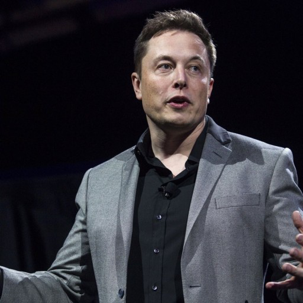

일론 머스크

가정사
1971년 남아프리카 공화국 프리토리아에서 엔지니어인 아버지와 모델인 어머니 사이에서 2남 1녀 중 장남으로 태어났다.
머스크의 부모는 머스크가 아직 학생이던 시절에 이혼하였고, 머스크와 나머지 형제들은 모두 아버지인 에롤 머스크에게 맡겨졌다.
일론 머스크는 어머니와는 지금까지도 잘 지내지만 아버지인 에롤과는 사이가 아주 나쁘다. 평전의 인터뷰에서 그는 아버지에 대한 인터뷰를 아예 거부했다.
또한 일론의 동생들도 아버지에 대해 불만을 털어놓은 적이 많다. 최근 한 인터뷰에선 아예 "내 아버지는 악마이자 끔찍한 인간 말종이다. 당신들이 상상할 수 있는 모든 악행과 범죄를 다 저질러본 사람이다."고 말하면서 인터뷰 도중에 울기까지 했다.
학교생활
머스크는 어렸을 때부터 컴퓨터에 관심이 있어 독학으로 프로그래밍 언어를 배우고, 12살 때에는 Blastar라는 이름의 게임을 동생과 함께 만들고 이를 게임 잡지에 500달러(현재 가치로 1200달러)에 판매했다.
남아공의 학교에서 그는 몸이 허약한 데다 독특했기 때문에 주변 애들에게 따돌림을 당하는 건 기본이고 폭행과 괴롭힘을 당했다. 한번은 계단에서 밀려 굴러떨어진 뒤 의식을 잃을 때까지 맞았다고 한다. 이때 코의 재건 수술을 했으며 후유증이 지금도 남아있어 호흡기에 문제가 있다고 한다.
머스크는 2년 동안 온타리오에 위치한 퀸즈 대학교에서 물리학을 전공하다 미국 펜실베니아 대학교로 편입, 2년 동안 물리학 학사를 받기 위한 학점을 이수하고 이후 1년 더 머물러서 와튼 스쿨에서 경제학 학점까지 이수하여 펜실베니아 대학교에서 물리학과 경제학 복수전공으로 학사를 끝마친다. 이 와중에 아르바이트로 게임 제작사에서 잠깐 일하기도 했다.
이후 재료과학 1995년 스탠퍼드 대학교 박사과정에 합격하였으나, 창업의 길로 들어서기로 결정하면서 입학도 채 하기 전에 합격 통지만 받고 등록을 하지 않아 자동 제적되었다.
사업의 시작
머스크는 창업하기 전에 하루에 먹는데 사용하는 비용을 1달러로 정하고 냉동 핫도그와 오렌지로 한 달을 버티면서 하루에 1달러로 생활하는 것도 나쁘지 않다는 판단을 하고 창업을 시작한다.
대학을 자퇴한 이후 1995년 ZIP2 창업을 시작으로 X.com(페이팔 전신회사)를 설립한 후 매각하여 젊은 나이에 2천억 원대의 억만장자가 된다. 이후 스페이스X를 설립하고 테슬라의 경영에 뛰어들면서 개인 자산의 대부분을 투자한다.
하지만 테슬라 로드스터의 배터리와 변속기 문제와 스페이스X의 펠컨 1의 1~3차 발사 싶래와 세계금융위기가 겹쳐 매우 힘들었지만 펠컨 1의 4차 발사 성공과 테슬라 로드스터의 성공적 출고로 폭발적인 성장을 이루었다.
사업
집투 코퍼레이션
페이팔
스페이스X
스타링크
테슬라
솔라시티
하이퍼루프 프로젝트
OpenAI
뉴럴링크
더 보링 컴퍼니